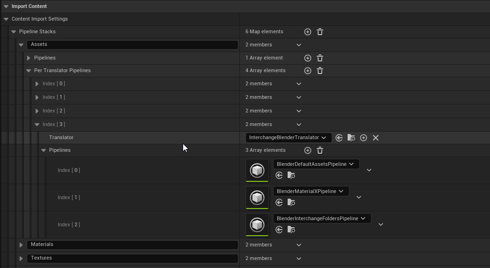
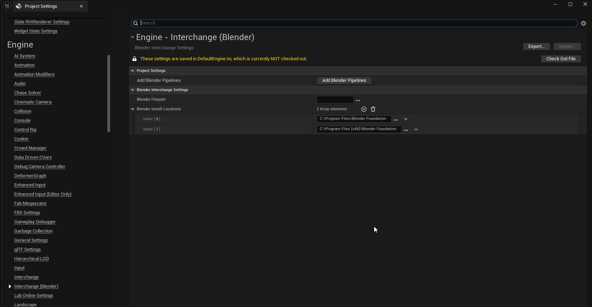

Project Settings
Interchange stores pipeline settings in your project settings under Engine Settings > Engine > Interchange
Open up it up here then browse to Interchange under then Engine section to verify your settings.

Looking at the project settings, they should include blender specific pipelines giving the plugin better control than the out of the box settings allow. Without these pipelines you may find that some assets do not import as expected 
This automation expects your project to have the following pipelines. It will not work without them. - Assets - Materials - Textures
If you have a custom pipeline setup with different pipelines and stack names, you can manually add the blender interchange pipelines as show above. You can also duplicate one of your pipelines name it "Assets" then rerun the script manually from the Interchange (Blender) section of the settings. Hitting this button is similar to restarting the editor.


Extra Step - Blender Path
If you don't explicitly set a path for your computers blender installation, the path will be deduced and the latest version found will be used. If you are experiencing issues or would like a specific version of blender used you can set the path to blender here.
You can also view and edit which paths are being searched for blend files. These paths vary per operating systems.
Extra Step - Studio Setup
Interchange settings are PerUserProjectSettings. What that means is that they are not checked in version control and each user can have their own individual settings. If you would like every user to use the same default settings you can apply your local settings by clicking the button in the top-right corner.